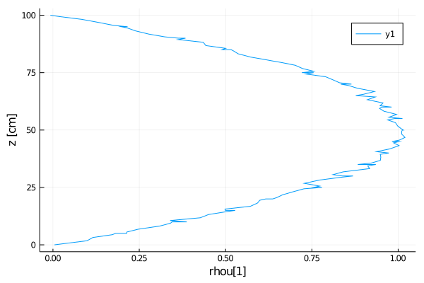
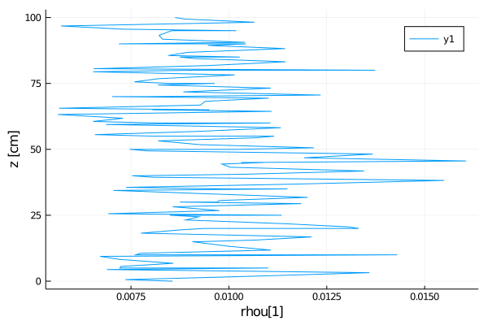
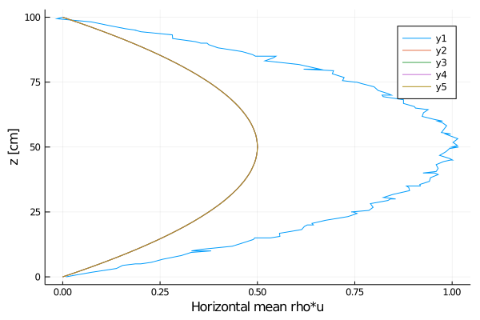
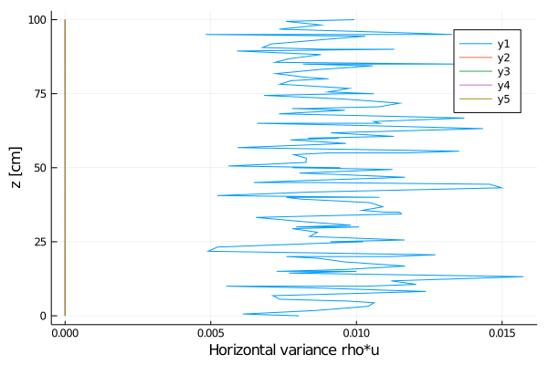

Single stack tutorial based on the 3D Burgers + tracer equations
Equations solved in balance law form:
Boundary conditions:
where
- $t$ is time
- $ρ$ is the density
- $\mathbf{u}$ is the velocity (vector)
- $\mathbf{ū}$ is the horizontally averaged velocity (vector)
- $μ$ is the dynamic viscosity tensor
- $γ$ is the Rayleigh friction frequency
- $T$ is the temperature
- $α$ is the thermal diffusivity
- $c$ is the heat capacity
- $ρcT$ is the thermal energy
Solving these equations is broken down into the following steps:
- Preliminary configuration
- PDEs
- Space discretization
- Time discretization
- Solver hooks / callbacks
- Solve
- Post-processing
Preliminary configuration
Loading code
First, we'll load our pre-requisites
- load external packages:
using MPI
using Distributions
using NCDatasets
using OrderedCollections
using Plots
using StaticArrays
using LinearAlgebra: Diagonal- load CLIMAParameters and set up to use it:
using CLIMAParameters
struct EarthParameterSet <: AbstractEarthParameterSet end
const param_set = EarthParameterSet()Main.ex-burgers_single_stack.EarthParameterSet()- load necessary ClimateMachine modules:
using ClimateMachine
using ClimateMachine.Mesh.Topologies
using ClimateMachine.Mesh.Grids
using ClimateMachine.Writers
using ClimateMachine.DGMethods
using ClimateMachine.DGMethods.NumericalFluxes
using ClimateMachine.Mesh.Geometry: LocalGeometry
using ClimateMachine.MPIStateArrays
using ClimateMachine.GenericCallbacks
using ClimateMachine.ODESolvers
using ClimateMachine.VariableTemplates
using ClimateMachine.SingleStackUtils- import necessary ClimateMachine modules: (
importing enables us to
provide implementations of these structs/methods)
using ClimateMachine.BalanceLaws
import ClimateMachine.BalanceLaws:
vars_state,
source!,
flux_second_order!,
flux_first_order!,
compute_gradient_argument!,
compute_gradient_flux!,
update_auxiliary_state!,
nodal_update_auxiliary_state!,
init_state_auxiliary!,
init_state_prognostic!,
boundary_state!Initialization
Define the float type (Float64 or Float32)
FT = Float64;Initialize ClimateMachine for CPU.
ClimateMachine.init(; disable_gpu = true);
const clima_dir = dirname(dirname(pathof(ClimateMachine)));Load some helper functions for plotting
include(joinpath(clima_dir, "docs", "plothelpers.jl"));Define the set of Partial Differential Equations (PDEs)
Define the model
Model parameters can be stored in the particular BalanceLaw, in this case, the BurgersEquation:
Base.@kwdef struct BurgersEquation{FT} <: BalanceLaw
"Parameters"
param_set::AbstractParameterSet = param_set
"Heat capacity"
c::FT = 1
"Vertical dynamic viscosity"
μv::FT = 1e-4
"Horizontal dynamic viscosity"
μh::FT = 1e-2
"Thermal diffusivity"
α::FT = 0.01
"IC Gaussian noise standard deviation"
σ::FT = 1e-1
"Rayleigh damping"
γ::FT = μh / 0.08 / 1e-2 / 1e-2
"Domain height"
zmax::FT = 1
"Initial conditions for temperature"
initialT::FT = 295.15
"Bottom boundary value for temperature (Dirichlet boundary conditions)"
T_bottom::FT = 300.0
"Top flux (α∇ρcT) at top boundary (Neumann boundary conditions)"
flux_top::FT = 0.0
endCreate an instance of the BurgersEquation:
m = BurgersEquation{FT}();This model dictates the flow control, using Dynamic Multiple Dispatch, for which kernels are executed.
Define the variables
All of the methods defined in this section were imported in Loading code to let us provide implementations for our BurgersEquation as they will be used by the solver.
Specify auxiliary variables for BurgersEquation
vars_state(::BurgersEquation, ::Auxiliary, FT) = @vars(z::FT, T::FT);Specify state variables, the variables solved for in the PDEs, for BurgersEquation
vars_state(::BurgersEquation, ::Prognostic, FT) =
@vars(ρ::FT, ρu::SVector{3, FT}, ρcT::FT);Specify state variables whose gradients are needed for BurgersEquation
vars_state(::BurgersEquation, ::Gradient, FT) =
@vars(u::SVector{3, FT}, ρcT::FT);Specify gradient variables for BurgersEquation
vars_state(::BurgersEquation, ::GradientFlux, FT) =
@vars(μ∇u::SMatrix{3, 3, FT, 9}, α∇ρcT::SVector{3, FT});Define the compute kernels
Specify the initial values in aux::Vars, which are available in init_state_prognostic!. Note that
- this method is only called at
t=0 aux.zandaux.Tare available here because we've specifiedzandT
in vars_state
function init_state_auxiliary!(
m::BurgersEquation,
aux::Vars,
geom::LocalGeometry,
)
aux.z = geom.coord[3]
aux.T = m.initialT
end;Specify the initial values in state::Vars. Note that
- this method is only called at
t=0 state.ρ,state.ρuandstate.ρcTare available here because
we've specified ρ, ρu and ρcT in vars_state
function init_state_prognostic!(
m::BurgersEquation,
state::Vars,
aux::Vars,
coords,
t::Real,
)
z = aux.z
ε1 = rand(Normal(0, m.σ))
ε2 = rand(Normal(0, m.σ))
state.ρ = 1
ρu = 1 - 4 * (z - m.zmax / 2)^2 + ε1
ρv = 1 - 4 * (z - m.zmax / 2)^2 + ε2
ρw = 0
state.ρu = SVector(ρu, ρv, ρw)
state.ρcT = state.ρ * m.c * aux.T
end;The remaining methods, defined in this section, are called at every time-step in the solver by the BalanceLaw framework.
Overload update_auxiliary_state! to call heat_eq_nodal_update_aux!, or any other auxiliary methods
function update_auxiliary_state!(
dg::DGModel,
m::BurgersEquation,
Q::MPIStateArray,
t::Real,
elems::UnitRange,
)
nodal_update_auxiliary_state!(heat_eq_nodal_update_aux!, dg, m, Q, t, elems)
return true # TODO: remove return true
end;Compute/update all auxiliary variables at each node. Note that
aux.Tis available here because we've specifiedTin
vars_state
function heat_eq_nodal_update_aux!(
m::BurgersEquation,
state::Vars,
aux::Vars,
t::Real,
)
aux.T = state.ρcT / (state.ρ * m.c)
end;Since we have second-order fluxes, we must tell ClimateMachine to compute the gradient of ρcT and u. Here, we specify how ρcT, u are computed. Note that transform.ρcT and transform.u are available here because we've specified ρcT and uin vars_state
function compute_gradient_argument!(
m::BurgersEquation,
transform::Vars,
state::Vars,
aux::Vars,
t::Real,
)
transform.ρcT = state.ρcT
transform.u = state.ρu / state.ρ
end;Specify where in diffusive::Vars to store the computed gradient from compute_gradient_argument!. Note that:
diffusive.μ∇uis available here because we've specifiedμ∇uin
vars_state
∇transform.uis available here because we've specifieduin
vars_state
diffusive.μ∇uis built using an anisotropic diffusivity tensor
function compute_gradient_flux!(
m::BurgersEquation,
diffusive::Vars,
∇transform::Grad,
state::Vars,
aux::Vars,
t::Real,
)
diffusive.α∇ρcT = m.α * ∇transform.ρcT
diffusive.μ∇u = Diagonal(SVector(m.μh, m.μh, m.μv)) * ∇transform.u
end;Introduce Rayleigh friction towards a target profile as a source. Note that:
- Rayleigh damping is only applied in the horizontal by subtracting
the vertical component of momentum from the momentum vector.
function source!(
m::BurgersEquation{FT},
source::Vars,
state::Vars,
diffusive::Vars,
aux::Vars,
args...,
) where {FT}
ẑ = SVector{3, FT}(0, 0, 1)
ρ̄ū =
state.ρ * SVector{3, FT}(
0.5 - 2 * (aux.z - m.zmax / 2)^2,
0.5 - 2 * (aux.z - m.zmax / 2)^2,
0.0,
)
ρu_p = state.ρu - ρ̄ū
source.ρu -= m.γ * (ρu_p - ẑ' * ρu_p * ẑ)
end;Compute advective flux. Note that:
state.ρuis available here because we've specifiedρuin
vars_state
function flux_first_order!(
m::BurgersEquation,
flux::Grad,
state::Vars,
aux::Vars,
t::Real,
_...,
)
flux.ρ = state.ρu
u = state.ρu / state.ρ
flux.ρu = state.ρu * u'
flux.ρcT = u * state.ρcT
end;Compute diffusive flux (e.g. $F(μ, \mathbf{u}, t) = -μ∇\mathbf{u}$ in the original PDE). Note that:
diffusive.μ∇uis available here because we've specifiedμ∇uin
vars_state
function flux_second_order!(
m::BurgersEquation,
flux::Grad,
state::Vars,
diffusive::Vars,
hyperdiffusive::Vars,
aux::Vars,
t::Real,
)
flux.ρcT -= diffusive.α∇ρcT
flux.ρu -= diffusive.μ∇u
end;Boundary conditions
Second-order terms in our equations, $∇⋅(G)$ where $G = μ∇\mathbf{u}$, are internally reformulated to first-order unknowns. Boundary conditions must be specified for all unknowns, both first-order and second-order unknowns which have been reformulated.
The boundary conditions for ρ, ρu and ρcT (first order unknown)
function boundary_state!(
nf,
m::BurgersEquation,
state⁺::Vars,
aux⁺::Vars,
n⁻,
state⁻::Vars,
aux⁻::Vars,
bctype,
t,
_...,
)
if bctype == 1 # bottom
state⁺.ρ = 1
state⁺.ρu = SVector(0, 0, 0)
state⁺.ρcT = state⁺.ρ * m.c * m.T_bottom
elseif bctype == 2 # top
state⁺.ρ = 1
state⁺.ρu = SVector(0, 0, 0)
end
end;The boundary conditions for ρ, ρu and ρcT are specified here for second-order unknowns
function boundary_state!(
nf,
m::BurgersEquation,
state⁺::Vars,
diff⁺::Vars,
aux⁺::Vars,
n⁻,
state⁻::Vars,
diff⁻::Vars,
aux⁻::Vars,
bctype,
t,
_...,
)
if bctype == 1 # bottom
state⁺.ρ = 1
state⁺.ρu = SVector(0, 0, 0)
state⁺.ρcT = state⁺.ρ * m.c * m.T_bottom
elseif bctype == 2 # top
state⁺.ρ = 1
state⁺.ρu = SVector(0, 0, 0)
diff⁺.α∇ρcT = -n⁻ * m.flux_top
end
end;Spatial discretization
Prescribe polynomial order of basis functions in finite elements
N_poly = 5;Specify the number of vertical elements
nelem_vert = 20;Specify the domain height
zmax = m.zmax;Establish a ClimateMachine single stack configuration
driver_config = ClimateMachine.SingleStackConfiguration(
"BurgersEquation",
N_poly,
nelem_vert,
zmax,
param_set,
m,
numerical_flux_first_order = CentralNumericalFluxFirstOrder(),
);┌ Info: Model composition
│ param_set = Main.ex-burgers_single_stack.EarthParameterSet()
│ c = 1.0
│ μv = 0.0001
│ μh = 0.01
│ α = 0.01
│ σ = 0.1
│ γ = 1250.0
│ zmax = 1.0
│ initialT = 295.15
│ T_bottom = 300.0
└ flux_top = 0.0
┌ Info: Establishing single stack configuration for BurgersEquation
│ precision = Float64
│ polynomial order = 5
│ domain_min = 0.00 m x0.00 m x0.00 m
│ domain_max = 1.00 m x1.00 m x1.00 m
│ #vert elems = 20
│ MPI ranks = 1
│ min(Δ_horz) = 0.12 m
└ min(Δ_vert) = 0.01 mTime discretization
Specify simulation time (SI units)
t0 = FT(0)
timeend = FT(10)10.0We'll define the time-step based on the [Fourier number] and the [Courant number] of the flow
Δ = min_node_distance(driver_config.grid)
given_Fourier = FT(0.08);
Fourier_bound = given_Fourier * Δ^2 / max(m.α, m.μh);
Courant_bound = FT(0.1) * Δ
dt = min(Fourier_bound, Courant_bound)0.0002759950040694205Configure a ClimateMachine solver.
This initializes the state vector and allocates memory for the solution in space (dg has the model m, which describes the PDEs as well as the function used for initialization). This additionally initializes the ODE solver, by default an explicit Low-Storage Runge-Kutta method.
solver_config =
ClimateMachine.SolverConfiguration(t0, timeend, driver_config, ode_dt = dt);[ Info: Initializing BurgersEquationInspect the initial conditions for a single node (e.g. the southwest node)
Let's export a plot of the initial state
output_dir = @__DIR__;
mkpath(output_dir);
z_scale = 100 # convert from meters to cm
z_key = "z"
z_label = "z [cm]"
z = get_z(driver_config.grid, z_scale)
state_vars = get_vars_from_nodal_stack(
driver_config.grid,
solver_config.Q,
vars_state(m, Prognostic(), FT),
i = 1,
j = 1,
);
aux_vars = get_vars_from_nodal_stack(
driver_config.grid,
solver_config.dg.state_auxiliary,
vars_state(m, Auxiliary(), FT),
i = 1,
j = 1,
exclude = [z_key],
);
all_vars = OrderedDict(state_vars..., aux_vars...);Generate plots of initial conditions
export_plot_snapshot(
z,
all_vars,
("ρcT",),
joinpath(output_dir, "initial_condition_T.png"),
z_label,
);
export_plot_snapshot(
z,
all_vars,
("ρu[1]",),
joinpath(output_dir, "initial_condition_u.png"),
z_label,
);
export_plot_snapshot(
z,
all_vars,
("ρu[2]",),
joinpath(output_dir, "initial_condition_v.png"),
z_label,
);Inspect the initial conditions for the horizontal average
Horizontal statistics of variables
state_vars_var = get_horizontal_variance(
driver_config.grid,
solver_config.Q,
vars_state(m, Prognostic(), FT),
);
state_vars_avg = get_horizontal_mean(
driver_config.grid,
solver_config.Q,
vars_state(m, Prognostic(), FT),
);
export_plot_snapshot(
z,
state_vars_avg,
("ρu[1]",),
joinpath(output_dir, "initial_condition_avg_u.png"),
z_label,
);
export_plot_snapshot(
z,
state_vars_var,
("ρu[1]",),
joinpath(output_dir, "initial_condition_variance_u.png"),
z_label,
); 
Solver hooks / callbacks
Define the number of outputs from t0 to timeend
const n_outputs = 5;This equates to exports every ceil(Int, timeend/n_outputs) time-step:
const every_x_simulation_time = ceil(Int, timeend / n_outputs);Create a dictionary for z coordinate (and convert to cm) NCDatasets IO:
dims = OrderedDict(z_key => collect(z));
data_var = Dict[Dict([k => Dict() for k in 0:n_outputs]...),]
data_var[1] = state_vars_var
data_avg = Dict[Dict([k => Dict() for k in 0:n_outputs]...),]
data_avg[1] = state_vars_avgOrderedCollections.OrderedDict{Any,Any} with 5 entries:
"ρ" => [1.0, 1.0, 1.0, 1.0, 1.0, 1.0, 1.0, 1.0, 1.0, 1.0 … 1.0, 1.0, 1.…
"ρu[1]" => [-0.0196029, 0.0364377, 0.0939595, 0.126314, 0.143579, 0.200895, 0…
"ρu[2]" => [0.00992096, 0.00711187, 0.0678314, 0.1328, 0.140056, 0.213045, 0.…
"ρu[3]" => [0.0, 0.0, 0.0, 0.0, 0.0, 0.0, 0.0, 0.0, 0.0, 0.0 … 0.0, 0.0, 0.…
"ρcT" => [295.15, 295.15, 295.15, 295.15, 295.15, 295.15, 295.15, 295.15, 2…The ClimateMachine's time-steppers provide hooks, or callbacks, which allow users to inject code to be executed at specified intervals. In this callback, the state and aux variables are collected, combined into a single OrderedDict and written to a NetCDF file (for each output step step).
step = [0];
callback = GenericCallbacks.EveryXSimulationTime(every_x_simulation_time) do
state_vars_var = get_horizontal_variance(
driver_config.grid,
solver_config.Q,
vars_state(m, Prognostic(), FT),
)
state_vars_avg = get_horizontal_mean(
driver_config.grid,
solver_config.Q,
vars_state(m, Prognostic(), FT),
)
step[1] += 1
push!(data_var, state_vars_var)
push!(data_avg, state_vars_avg)
nothing
end;Solve
This is the main ClimateMachine solver invocation. While users do not have access to the time-stepping loop, code may be injected via user_callbacks, which is a Tuple of GenericCallbacks.
ClimateMachine.invoke!(solver_config; user_callbacks = (callback,))1.0058697196640842Post-processing
Our solution has now been calculated and exported to NetCDF files in output_dir.
Let's plot the horizontal statistics of the solution:
export_plot(
z,
data_avg,
("ρu[1]"),
joinpath(output_dir, "solution_vs_time_u.png"),
z_label,
xlabel = "Horizontal mean rho*u",
);
export_plot(
z,
data_var,
("ρu[1]"),
joinpath(output_dir, "variance_vs_time_u.png"),
z_label,
xlabel = "Horizontal variance rho*u",
);
export_plot(
z,
data_avg,
("ρcT"),
joinpath(output_dir, "solution_vs_time_T.png"),
z_label,
xlabel = "Horizontal mean rho*c*T",
);
export_plot(
z,
data_var,
("ρu[3]"),
joinpath(output_dir, "variance_vs_time_w.png"),
z_label,
xlabel = "Horizontal variance rho*w",
); 
The results look as we would expect: they Rayleigh friction damps the horizontal velocity to the objective profile and the horizontal diffusivity damps the horizontal variance. To run this file, and inspect the solution, include this tutorial in the Julia REPL with:
include(joinpath("tutorials", "Atmos", "burgers_single_stack.jl"))This page was generated using Literate.jl.